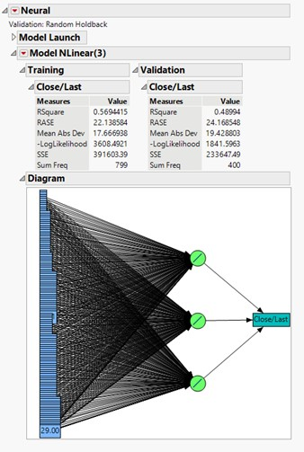
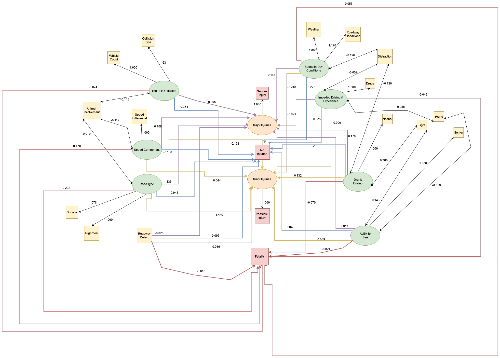

Mission Job Finder
A Python tool that scouts mission-driven software jobs every morning. It pulls postings from niche job boards and the public Greenhouse, Lever and Ashby APIs of about 60 nonprofit, health and civic-tech employers. It filters for remote, mid-level, full-time roles, ranks them by how well they match my resume, and sends a daily digest. It's fully tested offline and runs on a schedule with GitHub Actions.
GitHub
Nutrition Tracker (in progress)
A MyFitnessPal-style app I'm building spec-first: an Expo/React Native client for iOS, Android and the web, a Go API on PostgreSQL, and Supabase Auth. I wrote the architecture, data model, API contract and a 21-task build plan before writing code.
GitHub
From school

This image is of the final product in a project from CISC 480: AI and Robotics. We used a Lego Mindstorm robot and a python program to control the robot to draw various letters. For the final test, we were able to have the robot draw simple words like "mile". It was a very fun project to work on!

This image is from my final project in STAT 400: Data Mining and Machine Learning. It is a visualization of a neural network model we found when trying to predict stock prices. We used five companies, Google, Meta, Amazon, Microsoft, and Apple and the data from the last 5 years of their opening and closing prices. Although our model only had a 57% rate to predict the right price, I was still able to learn a lot about machine learning and neural networks.

This image is from my final project in STAT 360: Computational Statistics and Data Analysis. It is our path diagram from our final project where we analyzed a dataset of car accidents and tried to find common factors that led up to more deadly crashes. Some of our findings were that drivers being under the influence of drugs or alcohol, driving during the night and dangerous road conditions from weather or road damage leads to more fatal accidents.